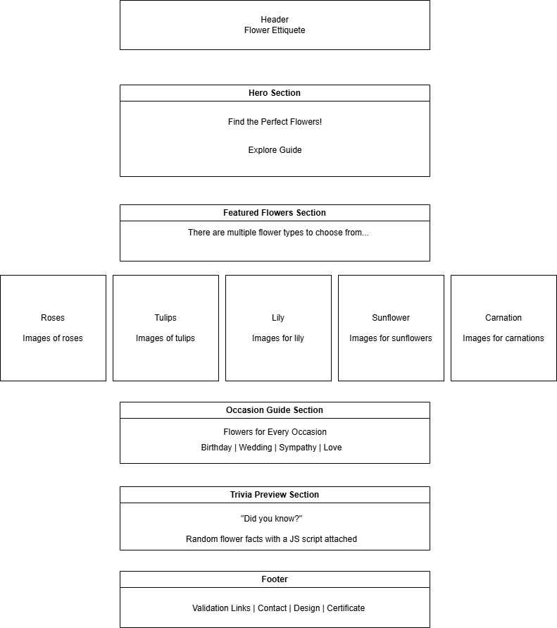

Project Overview
Project Description
This project involves the design and development of a web-based application for a flower business. The website will provide information about different types of flowers commonly sold by florists, along with guidance on selecting the best flowers for various occasions such as birthdays, anniversaries, sympathy, and celebrations.
The goal of this application is to improve customer knowledge, enhance decision-making when purchasing flowers, and promote a small flower business by increasing visibility and accessibility.
Intended Users
- Customers looking to purchase flowers
- Individuals seeking guidance on flower meanings and occasions
- Event planners and gift buyers
- General users interested in floral arrangements
Website Content Overview
- Information about different flower types (roses, tulips, lilies, etc.)
- Guides for choosing flowers based on occasions
- Photo gallery of arrangements
- Client/business information
- Contact form for inquiries
Client Information
- Name: [Private or Local Florist Name]
- Business: Local Flower Shop / Floral Design Business
- Email: [private@email.com]
- Phone: [Private]
Wireframe

Site Map

Page Design
Home Page (index.html)
- Purpose: Introduce the flower business and highlight key features
- Audience: General users
- Content: Overview, featured flowers, navigation
- Data Entry: No
- Actions: Navigation to other pages
About Page
- Purpose: Provide information about the florist/business
- Audience: Customers and visitors
- Content: Business background and mission
- Data Entry: No
- Actions: Informational
Flower Guide Page
- Purpose: Educate users about flower types and meanings
- Audience: Customers choosing flowers
- Content: Flower descriptions, meanings, images
- Data Entry: No
- Actions: Interactive selection/filtering
Gallery Page
- Purpose: Display flower arrangements
- Audience: Customers
- Content: Image gallery
- Data Entry: No
- Actions: Click images to enlarge
Contact Page
- Purpose: Allow users to contact the business
- Audience: Customers
- Content: Contact form
- Data Entry: Yes
- Validation: Email format, required fields
- Actions: Submit form
Dynamic Functionality
- Gallery Page: Interactive image gallery with lightbox effect
- Contact Page: Form validation using JavaScript
- Flower Guide Page: Filtering flowers by occasion (birthday, wedding, etc.)
- jQuery UI: Accordion or tabs for flower categories
- AJAX: Load flower data dynamically from a JSON file
Example inspiration: https://jqueryui.com/
Notes
This project follows course requirements and focuses on providing an informative and interactive experience without storing user data. External inspiration includes florist websites and jQuery UI examples.
Created by: Matthew Bridges
Date: April 2026
Time: Approximately 4-5 hours